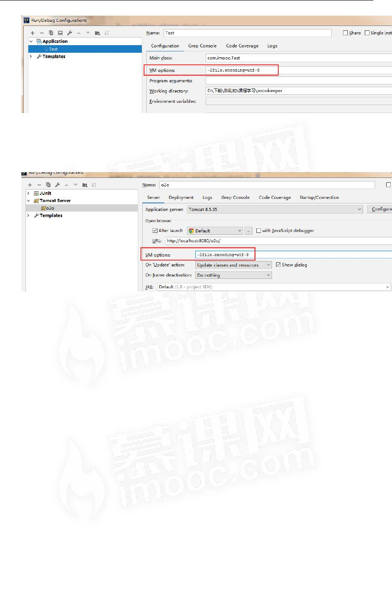

关于
IDEA
控制台出
现乱码问题，可以
按照如
下步骤修改解决：
1
、
找到
IDEA
安
装
目
录
，
在
b
in
目
录
下
找
到
idea.exe.vm
options
文
件
和
idea64.exe
.vmoptions
文
件，如下图所示：
使用可编辑的形式打
开
idea.ex
e.vmoptions
文件
和
id
ea64.
ex
e.vmoptions
文件
（比
如可以用记事本打开）
，在文件末尾添加
-Dfile.encod
ing=UTF-8
，如下图
所示：
2
、
在
IDEA
中，点击
F
ile->Set
ting->Edit
or
->F
ile
Encodings
，将
G
lobal Encoding
、
Project
Encoding
、
D
efault
encod
eing
for
properties
files
这三项都设置
成
UTF-8
，
如下图所示：
3
、
如果运行的
是普通的
J
av
a
程序，在菜单栏找到
run
->Edit
Configrat
ions
，设置
vm
option
为
-
D
file.encod
ing=utf
-8
，如
下图所示：

4
、
如果运行的是
web
项目，在配置
tomcat
时，设置
vm
option
为
-Dfile.encod
ing=utf
-8
，如
下图所示：
5
、
重启
IDEA
。